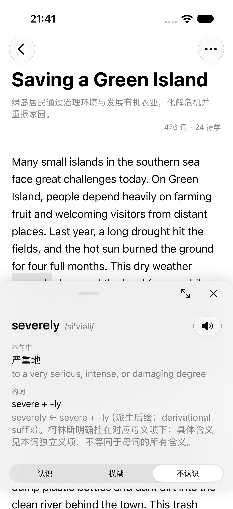
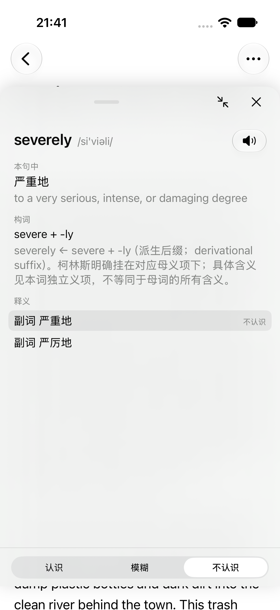
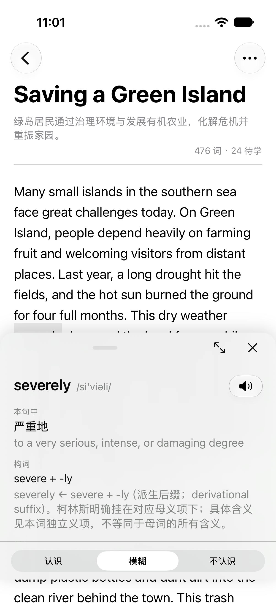
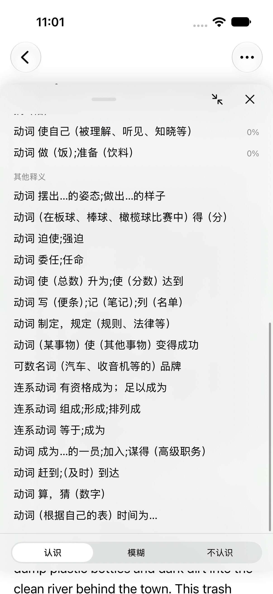

<meta charset="utf-8">
<title>Phase 13 派生义项与查词体验</title>
<meta name="viewport" content="width=device-width, initial-scale=1, viewport-fit=cover">

<style>
  :root {
    --ground:#FAFAFC; --surface:#FFFFFF; --surface-sub:#F2F2F7;
    --ink:#1B1D26; --ink-mid:#4E5364; --ink-soft:#757B8E;
    --rule:#E3E4ED; --rule-soft:#EDEEF4;
    --accent:#37429B; --accent-soft:#E8EAF7;
    --mark:#B37A0C; --mark-soft:#FBF2DE;
    --stop:#A33A3A; --good:#2F7A4F;
    --f-serif:"Newsreader",Georgia,serif;
    --f-sans:"PingFang SC","HarmonyOS Sans SC","Microsoft YaHei","Noto Sans SC",sans-serif;
    --f-mix:"Newsreader","PingFang SC","HarmonyOS Sans SC","Microsoft YaHei",serif;
    --f-mono:"IBM Plex Mono",ui-monospace,"Cascadia Mono",monospace;
    --col:45rem;
  }
  @media (prefers-color-scheme:dark) {
    :root {
      --ground:#101119; --surface:#171922; --surface-sub:#1D202B;
      --ink:#E7E8F0; --ink-mid:#ADB2C4; --ink-soft:#868CA0;
      --rule:#2A2D3B; --rule-soft:#22252F;
      --accent:#98A1EE; --accent-soft:#232741;
      --mark:#DFAB49; --mark-soft:#2C2718;
      --stop:#E08585; --good:#6BC191;
    }
  }
  * { box-sizing:border-box; }
  body { background:var(--ground); color:var(--ink); font-family:var(--f-sans);
         font-size:16px; line-height:1.75; -webkit-font-smoothing:antialiased;
         padding:0 1.5rem 6rem; }
  .wrap { max-width:var(--col); margin:0 auto; }
  .masthead { padding:4.5rem 0 0; display:flex; flex-direction:column; gap:1.1rem; }
  .eyebrow { font-family:var(--f-mono); font-size:0.7rem; font-weight:500;
             letter-spacing:0.14em; text-transform:uppercase; color:var(--ink-soft); }
  h1 { font-family:var(--f-serif); font-size:clamp(2.4rem,7.5vw,3.4rem); font-weight:500;
       letter-spacing:-0.02em; line-height:1.05; margin:0; text-wrap:balance; }
  .standfirst { font-family:var(--f-mix); font-size:1.18rem; line-height:1.6;
               color:var(--ink-mid); margin:0; max-width:34rem; text-wrap:pretty; }
  .thesis { font-family:var(--f-mix); font-size:1rem; margin:0; padding-left:1.1rem;
            border-left:2px solid var(--accent); }
  .parent { font-size:0.83rem; color:var(--ink-soft); font-family:var(--f-mono); }
  a { color:var(--accent); text-decoration:none; border-bottom:1px solid var(--rule); }
  nav { display:flex; flex-wrap:wrap; gap:0.5rem 1rem; margin-top:1.6rem; }
  section { margin-top:4rem; }
  .sec-head { display:flex; flex-wrap:wrap; align-items:baseline; gap:0.85rem;
              padding-bottom:0.7rem; border-bottom:1px solid var(--ink); margin-bottom:1.6rem; }
  .sec-mark { font-family:var(--f-mono); font-size:0.78rem; font-weight:600;
              color:var(--accent); letter-spacing:0.06em; }
  h2 { font-family:var(--f-mix); font-size:1.32rem; font-weight:600;
       letter-spacing:-0.01em; margin:0; line-height:1.3; }
  .sec-note { margin-left:auto; font-size:0.78rem; color:var(--ink-soft); font-family:var(--f-mono); }
  h3 { font-family:var(--f-mix); font-size:1.02rem; font-weight:600; margin:2rem 0 0.8rem; }
  h3:first-of-type { margin-top:0.4rem; }
  .lede { font-family:var(--f-mix); color:var(--ink-mid); margin:0 0 1.6rem; max-width:36rem; }
  p { margin:0 0 1rem; } p:last-child { margin-bottom:0; }
  .table-scroll { overflow-x:auto; }
  table { width:100%; border-collapse:collapse; font-size:0.9rem; min-width:28rem; }
  th { text-align:left; font-family:var(--f-mono); font-size:0.7rem; font-weight:500;
       letter-spacing:0.1em; text-transform:uppercase; color:var(--ink-soft);
       padding:0 0.9rem 0.55rem 0; border-bottom:1px solid var(--rule); }
  td { padding:0.62rem 0.9rem 0.62rem 0; border-bottom:1px solid var(--rule-soft);
       vertical-align:top; color:var(--ink-mid); }
  td:first-child { color:var(--ink); }
  .steps { display:flex; flex-direction:column; gap:1px; background:var(--rule); border:1px solid var(--rule); }
  .step { background:var(--surface); padding:0.95rem 1.1rem; display:grid;
          grid-template-columns:1.9rem 1fr; gap:0.9rem; align-items:baseline; }
  .step-n { font-family:var(--f-mono); font-size:0.76rem; color:var(--accent); }
  .step-what { font-size:0.93rem; }
  .step-what b { display:block; font-weight:600; font-size:0.97rem;
                font-family:var(--f-mix); margin-bottom:0.15rem; }
  .step-what span { color:var(--ink-mid); }
  .callout { background:var(--mark-soft); border-left:2px solid var(--mark);
             padding:1rem 1.2rem; margin:0 0 1.6rem; font-size:0.93rem; }
  .callout b { font-weight:600; }
  .wire { font-family:var(--f-mono); font-size:0.76rem; line-height:1.9; white-space:pre-wrap;
          background:var(--surface); border:1px solid var(--rule); padding:1.1rem 1.2rem;
          overflow-wrap:anywhere; color:var(--ink-mid); margin:0 0 1.6rem; }
  .wire b { color:var(--ink); font-weight:500; }
  code { font-family:var(--f-mono); font-size:0.86em; background:var(--surface-sub);
         padding:0.08em 0.32em; border-radius:2px; overflow-wrap:anywhere; }
  .shots { display:grid; grid-template-columns:repeat(auto-fit,minmax(15rem,1fr)); gap:1.5rem; }
  .shot { margin:1rem 0; }
  .shot img { display:block; width:100%; max-width:20rem; margin:0 auto;
              border:1px solid var(--rule); border-radius:16px; }
  .shot figcaption { margin-top:.8rem; color:var(--ink-soft); font-size:.86rem; line-height:1.65; }
  footer { margin-top:4.5rem; padding-top:1.25rem; border-top:1px solid var(--rule);
           font-size:0.8rem; color:var(--ink-soft); display:flex; flex-wrap:wrap;
           gap:0.5rem 1.5rem; font-family:var(--f-mono); }
  @media (max-width:34rem) {
    body { padding:0 1.15rem 4rem; }
    .step { grid-template-columns:1fr; gap:0.2rem; }
  }
</style>

<main class="wrap" lang="zh-CN">
  <header class="masthead">
    <div class="eyebrow">Phase 13 · 本地实现与机器验证完成，尚未人工验收／部署 · 2026-10-10 ／ 11</div>
    <h1>派生义项与查词体验</h1>
    <p class="standfirst">一个常用词看得见释义，却标不了；标完的词没有当场备好复习语境；查词面板还在两档之间跳。P13 从真实阅读中遇到的这五件事开始。</p>
    <p class="thesis"><b>补真实义项，不放开义项 0；标记落本地，备句在后台；慢拖自由调高，快甩直接最大化。</b><br>正文保留定稿时的方案与核查依据；本地实施与真实样本验证见 <a href="#implementation">§9</a>，人工验收及上线边界见 <a href="#acceptance">§10</a>。机器结果不代替用户操作。</p>
    <p class="parent">功能设计 <a href="./english-reader.html">English Reader</a> ｜ 上一阶段 <a href="./phase-12.html">Phase 12</a> ｜ 相关规则 <a href="./pitfalls.html#pitfalls-5">查词典排坑</a></p>
  </header>

  <div class="callout" style="margin-top:2.5rem" id="decisions">
    <b>2026-10-10，用户明确的范围与选择</b>
    <p style="margin-top:0.8rem">① 查清并处理没有义项的词；补缺<b>只采用「利用派生词小节与母义项的对应关系」</b>。不另加其他词典完整义项补缺路线，也不采用「只给构词提示、继续不能标记」的替代方案。</p>
    <p>② 每次标记词后立即上报，申请复习用的句子。</p>
    <p>③ 点词面板展开后，点别处要收回；只保留最新查词目标，不需要在旧目标之间来回跳转。</p>
    <p>④ 可以加拆词；只解释真实构词，不按中文译文硬拆英文。</p>
    <p>⑤ 高度不再只有两档。用户补充原话：<b>「普通的上滑就是调整高度，往上甩就是展开到最大。」</b></p>
    <p><b>定稿补充：</b>用户选择现有 2017 派生小节补词性与中文，模型只补独立英文定义；复习句子中英文齐全才算备好。用户已授权提交推送文档并按文档开始实现；面板按本文建议执行，具体见 <a href="#pending">§7</a>。</p>
  </div>

  <nav class="parent" aria-label="文档目录">
    <a href="#scope">§1 范围与现状</a><a href="#senses">§2 派生义项</a>
    <a href="#sentences">§3 标记与备句</a><a href="#latest">§4 最新查词</a>
    <a href="#formation">§5 真实拆词</a><a href="#gesture">§6 两种上滑</a>
    <a href="#pending">§7 定稿补充</a><a href="#evidence">§8 核查依据</a>
    <a href="#implementation">§9 实施与本地验证</a><a href="#acceptance">§10 人工验收与上线边界</a>
  </nav>

  <section id="scope">
    <div class="sec-head"><span class="sec-mark">§1</span><h2>五件事，不另开一条功能线</h2><span class="sec-note">范围</span></div>
    <p class="lede">P12 已结束。这次不回头补跑 P11／P12 人工验收，也不从旧路线推导新功能；只讨论用户列出的五项。</p>
    <div class="table-scroll"><table>
      <thead><tr><th>用户问题</th><th>当前实际情况</th><th>P13 要解决什么</th></tr></thead>
      <tbody>
        <tr><td>为什么没有义项</td><td><code>severely</code> 只有词典普通释义，生产 token 的义项是 0。</td><td>把词典明确给出的派生小节建立成独立可学习义项。</td></tr>
        <tr><td>标记后马上备句</td><td>标记只写设备日志；既有同步点才上报，生成完成后也不一定及时刷新设备内容。</td><td>落盘后立即启动可靠的后台上报、内容申请和获取。</td></tr>
        <tr><td>点别处收回旧面板</td><td>只有一个当前查词对象，但空白点击不关闭；大档时背景交互被禁用。</td><td>关闭旧现场、直接换新目标，不增加查词历史栈。</td></tr>
        <tr><td>加拆词</td><td>已有词族与下发字段；原生面板没有显示构词信息。</td><td>展示有依据的构词解释，不把拼写巧合当构词。</td></tr>
        <tr><td>慢拖调高、快甩最大化</td><td>原生 sheet 只有自适应小档与大档两个停靠点。</td><td>普通拖动可任意高度停留，快速上甩直接到最大高度。</td></tr>
      </tbody>
    </table></div>
    <p style="margin-top:1.2rem"><b>实现边界：</b>内容生产仍在服务端，词池、排期和复习队列仍在 Swift Core；新内容仍按离线形状下发。界面改动不放宽真实义项与稳定内容 id 的要求。</p>
  </section>

  <section id="senses">
    <div class="sec-head"><span class="sec-mark">§2</span><h2>词典收了用法，却省略了独立义项</h2><span class="sec-note">已选路线</span></div>
    <p class="lede">截图里的 <code>severely</code> 不是「没有意思」，也不是手机把已有义项藏在缓存里。2026-10-10 只读查询生产库：文章 <code>553</code>《Saving a Green Island》中，这一处确实是 <code>sense_id = 0</code>；<code>severe</code> 有三条义项，<code>severely</code> 没有独立义项。</p>
    <h3>2012 版原文是什么结构</h3>
    <p>下面按词典原文层级整理，不是新增的义项。<code>severely</code> 同时附在两个不同的母义项下面；每个附属小节只有标题和例句，没有独立编号、词性、中文释义或英文定义。</p>
    <div class="wire"><b>severe · 第 1 条</b>
十分严重的；极为恶劣的
  英文定义、severe 的例句
  <b>severely</b>
    An aircraft overshot the runway and was severely damaged.
    一架飞机冲出了跑道，严重受损。

<b>severe · 第 2 条</b>
（惩罚、批评）严厉的，严重的，苛刻的
  英文定义、severe 的例句
  <b>severely</b>
    …a campaign to try to change the law to punish dangerous drivers more severely.
    试图修改法律以加重对危险驾车者处罚力度的运动</div>
    <p><b>义项边界已经藏在挂载关系里：</b>第一处对应“严重地”，第二处对应“严厉地”。不是让模型重新回答「这个词有几个意思」，而是把词典已明确区分的派生小节结构化。</p>
    <h3>只走这条路线</h3>
    <div class="steps">
      <div class="step"><span class="step-n">1</span><span class="step-what"><b>先识别派生小节与母义项的明确关系</b><span>保留派生词本身、对应母义项、原始例句及来源位置。不能仅凭词尾相似就推断；不能把母词的每条义项机械复制给派生词。</span></span></div>
      <div class="step"><span class="step-n">2</span><span class="step-what"><b>建立派生词自己的独立义项与稳定 id</b><span>母义项是解释依据，不是借用的学习身份。标记 severely 不等于标记 severe，复习状态不混在一起；已有单词、词组义项与设备记录不失效。</span></span></div>
      <div class="step"><span class="step-n">3</span><span class="step-what"><b>只补确定义项缺失的字段，不重新分义项</b><span>现有 2017 派生小节提供对应词性与中文，模型仅根据明确母义项、派生关系和原例句补独立英文定义。不发明义项边界；各字段分别记录来源，补写文本不能冒称词典原文。</span></span></div>
      <div class="step"><span class="step-n">4</span><span class="step-what"><b>修复受影响的语境标注，再走正常标记与复习</b><span>只处理本次补缺影响的词与旧无义项标注，不原地删建 token，不替换已有整套义项。客户端取得新内容后，才把这些词当作有真实义项的可学习对象。</span></span></div>
    </div>
    <h3>2017 版核查说明，不是第二条补缺路线</h3>
    <p>现有 2017 文件把 <code>severely</code> 仍放在 <code>severe</code> 条目下，明确写出 <code>ADV</code> 与“严重地／严厉地”，但这两块仍没有独立英文定义。用户已选用这些对应字段，再由模型只补英文定义；仍以明确的派生小节挂载关系决定独立义项，不另行采用其他词典完整义项补缺。</p>
    <div class="callout" style="margin-top:1.4rem"><b>不做两件事：</b>不加入「找另一份完整词典补缺」路线；不采用「只给构词提示，所以仍然不能标记」的替代方案。<br><b>也不做假修复：</b>不给义项 0 开放标记，不借母词 id，不让模型自由生成一套义项。不具备明确挂载关系的缺词，不能硬套进本路线。</div>
  </section>

  <section id="sentences">
    <div class="sec-head"><span class="sec-mark">§3</span><h2>标记马上生效，复习语境后台准备</h2><span class="sec-note">需求与建议</span></div>
    <p class="lede">用户要求「每次标记一个词的时候就立即上报，申请几条复习用的句子」。立即指落盘后立即启动后台工作，不是点词面板等网络或模型返回。</p>
    <div class="wire"><b>现有路径</b>
标记 → 设备日志与投影 → 等既有同步点 → 上报词池快照 → 后台补句子

<b>建议形成的闭环</b>
标记落盘、面板即时更新
  → 立即安排后台同步
  → 上报事件、拉取合并、报告最新词池快照
  → 服务端根据快照补缺的句子
  → 客户端取得内容并缓存、更新复习模型</div>
    <h3>已有能力，不另造一条管理调用</h3>
    <p>服务端已经订阅词池快照上报事件，按设备上报的在学集合补句子。<code>word.marked</code> 上报本身不是完整的备句申请；需要包含新标记的最新快照。阅读与复习不调用 <code>/v1/admin/…</code>，服务端不从事件存档推导学习状态。</p>
    <h3>仅加一次同步调用不够</h3>
    <div class="table-scroll"><table>
      <thead><tr><th>现有缺口</th><th>必须守住的结果</th></tr></thead><tbody>
        <tr><td>同步已经在途时，后来的标记可能不在这一趟发送集合里。</td><td>连续标多个词可合并网络工作，但不能漏掉最后加入的词。</td></tr>
        <tr><td>事件送达、快照失败后，没有独立待补报状态。</td><td>即使事件待发数已为 0，未送达的最新快照仍需在后续同步中补报。</td></tr>
        <tr><td>快照触发异步生成；紧接着取一次句子池可能早于生成完成。</td><td>区分已申请、等待内容、取得可用句子与失败，不把一次 GET 当成备句成功。</td></tr>
        <tr><td>复习页已有缓存时，不一定及时取得新句子或重拼复习内容。</td><td>新内容持久缓存后通知复习模型更新；不把已亮屏拉回阻塞转圈，也不替换正在作答的题。</td></tr>
      </tbody>
    </table></div>
    <h3>数量与离线边界</h3>
    <p>源码默认 <code>review_pool_target = 8</code>、<code>review_generate_batch = 12</code>，均是可配置参数；<b>本次没有查询生产配置，不能把默认值称为线上实值。</b>现有生成会过量请求后逐句筛选，并不保证一趟恰好留下八条。</p>
    <p><b>实现口径：</b>沿用配置目标，复用已有中英文齐全的可用句子，不足才补，不因改一次标记重复生成一批；在途同义项内容任务需要合并，但新标的其他义项不能被全局忙状态丢弃。撤销标记同步词池变化，不额外申请新句子。库存是内容数量，不冒充八条未见考句，是否见过仍由设备决定。</p>
    <p>离线标记不回滚；已有内容照常复习。新词句子须中英文齐全才算备好，未备好明确等待内容，不能伪装完成。前台采用有上限的刷新等待，识别内容失败与网络失败；超时仍保留待获取状态，下一次前台或同步继续，不无限转圈。</p>
  </section>

  <section id="latest">
    <div class="sec-head"><span class="sec-mark">§4</span><h2>只保留最新查词现场</h2><span class="sec-note">关闭与换词</span></div>
    <p class="lede">用户明确旧词不需要来回跳转。当前实现本来就只有一个查词对象，没有上一词／下一词历史栈；缺的是面板外点击关闭，以及展开时仍能点外露正文。</p>
    <p>「收回」按<b>关闭面板</b>执行，不是仅缩回小档。用户授权按文档实现，统一以下行为。</p>
    <div class="table-scroll"><table>
      <thead><tr><th>操作</th><th>行为</th></tr></thead><tbody>
        <tr><td>点面板外的空白、非查词位置</td><td>关闭面板，清掉临时选中底色。</td></tr>
        <tr><td>点另一词或词组</td><td>一次点击直接替换成最新目标，不要求先关旧面板再点第二次。</td></tr>
        <tr><td>点导航按钮或菜单</td><td>关闭旧查词现场，同时执行原操作，不吞掉按钮点击。</td></tr>
        <tr><td>新目标出现</td><td>按新语境选义项、回到新词内容顶部；恢复默认高度，不继承旧目标的展开与手选义项状态。</td></tr>
        <tr><td>同一词在另一处出现</td><td>也是新查词目标，按 token／词组跨度识别，不仅按 headword 判断是否换词。</td></tr>
      </tbody>
    </table></div>
    <p style="margin-top:1.2rem"><b>不删除学习数据：</b>关闭的是临时面板与临时底色，永久标记、遇见记录和点击事件照常保留。词组中间空格仍属于整个词组，不作为空白关闭区域。</p>
    <p>不能盖一个吞掉所有点击的透明层，也不能把点空白映射到最近的词。最大高度下没有露出的正文自然不能点，需要保留可访问的关闭操作。</p>
  </section>

  <section id="formation">
    <div class="sec-head"><span class="sec-mark">§5</span><h2>拆真实构词，不拆中文译文</h2><span class="sec-note">辅助理解</span></div>
    <p class="lede">用户举例「drought 是旱灾，能不能拆成旱和灾两个部分」。中文翻译有两个字，不代表英文也有两个一一对应的部件；不把这种对应写成构词知识。</p>
    <div class="wire"><b>可以解释的真实关系</b>
severely ← severe + -ly
happiness ← happy + -ness
nationality ← national + -ity；继续解释 national 与 nation 的关系

<b>不能这样解释</b>
drought = 一个表示“旱”的部件 + 一个表示“灾”的部件</div>
    <p>构词提示解释「这个词怎么形成、与母词有什么关系」，不代替本句义项、不借母词 id，也不顺带改变复习入队和排期规则。添加真实拆词是原始需求；被排除的是用拆词提示代替义项补缺，不是取消这项需求。</p>
    <h3>现有数据与显示缺口</h3>
    <p>生产词族表已有 <code>severely → severe + -ly</code>，但这一条来源是规则、拆解说明为空。当前下发只允许经过模型复核、非语义漂移档且未标「需确认」的关系；规则候选不能直接展示。原生 <code>ReaderModel.wordSubject</code> 与 <code>LookupSheet</code> 也没有读取、展示已有构词字段。</p>
    <p>因此不能把「表里有关系」写成「手机已有构词提示」。P13 要连接真实、有依据的构词解释；不能拆或对应不成立时不硬拆。<code>hardly</code> 不能按 <code>hard</code> 的任意义项机械转换，<code>lately</code> 也不能解释成“迟地”。</p>
  </section>

  <section id="gesture">
    <div class="sec-head"><span class="sec-mark">§6</span><h2>慢拖调高度，快甩到最大</h2><span class="sec-note">用户补充</span></div>
    <div class="callout"><b>用户原话：</b>「上滑分为两种，普通的上滑就是调整高度，往上甩就是展开到最大。」<br>这条取代此前只描述「上滑连续升高」的解释。不能把多加几个停靠档当成无级调节。</div>
    <div class="table-scroll"><table>
      <thead><tr><th>手势</th><th>面板行为</th><th>状态</th></tr></thead><tbody>
        <tr><td>普通上拖</td><td>跟手连续升高，松手停在当前位置，不吸附到两个档位。</td><td>用户已明确</td></tr>
        <tr><td>快速向上甩</td><td>松手后动画展开到最大高度。</td><td>用户已明确</td></tr>
        <tr><td>普通下拖</td><td>连续降低，松手保留高度；到关闭边界关闭。</td><td>按文档执行</td></tr>
        <tr><td>最大高度后继续上滑内容</td><td>滚动义项内容，而不是继续升高面板。</td><td>按文档执行</td></tr>
        <tr><td>顶部把手</td><td>始终可调面板高度，不与义项滚动、点选和底部标记横拖混在一起。</td><td>按文档执行</td></tr>
      </tbody>
    </table></div>
    <h3>快甩与慢拖的区别</h3>
    <p>按松手时的向上速度区分快甩，而不是只按移动距离：慢慢拖很远仍然是调高度，短距离快速上甩可以最大化。误触保护、速度阈值和动画手感需真机调校，未在讨论中指定数字。</p>
    <p><b>内容规则：</b>「展开」指快捷到最大高度，不解锁另一套义项。普通拖和快甩查看同一份内容，用法贴在对应义项下面，只是窗口大小不同；不因高度跨过某个门槛自动跳到最大。</p>
    <h3>与关闭、换词的关系</h3>
    <p>任意高度下，仍露出的正文遵守 §4：空白点击关闭，有效词点击直接换最新目标。底部标记控件固定，长内容可滚；大字、安全区、VoiceOver 的非拖动展开与关闭操作都必须保留。</p>
    <p><b>设计判断，尚未做原型验证：</b>当前原生 sheet 的两个 detent 不能实现任意高度松手停留。真正无级调节预计需要自定义可调整面板，而不是增加第三档、第四档。具体实现方案未定，不能把本页当成已验证的技术解法。</p>
  </section>

  <section id="pending">
    <div class="sec-head"><span class="sec-mark">§7</span><h2>定稿补充与实施边界</h2><span class="sec-note">2026-10-10</span></div>
    <p class="lede">用户要求 push 后按文档编程，并在提交前选择了以下内容口径。只走已选的派生小节路线，不加入其他完整词典或仅构词提示替代方案。</p>
    <div class="steps">
      <div class="step"><span class="step-n">A</span><span class="step-what"><b>2017 补字段，模型只补英文定义</b><span>词性与中文来自现有 2017 对应派生小节；义项边界来自明确母义项挂载关系。模型不重新分义项，只补独立英文定义。不能确定对应关系或缺少词典字段时明确报告，不硬配。字段来源分别保存，不冒称词典原文。</span></span></div>
      <div class="step"><span class="step-n">B</span><span class="step-what"><b>中英文齐全才算备好</b><span>沿用现有可配置库存目标，复用已有双语内容；不足时后台补句并翻译。生成和翻译全部完成后才能报告已备好。等待有上限，失败可见，不因退出阅读而取消必要的同步或内容获取。</span></span></div>
      <div class="step"><span class="step-n">C</span><span class="step-what"><b>面板按文档联动</b><span>普通拖动任意停留，快速上甩最大化；换词恢复默认高度和内容顶部，点另一个词直接替换，面板外空白关闭。同一份义项和用法内容不按高度分两套，不沿用 P12 的大档禁用背景规则。</span></span></div>
    </div>
    <p style="margin-top:1.2rem">用户已授权把上次文档迁移与 P13 一并提交推送至 ios，随后开始实现。应用代码在验收节点前留在工作区。此授权不包含 TestFlight 上传、生产批量改库或跳过人工验收；P13 不能套用 P11／P12 的结束方式。</p>
  </section>

  <section id="evidence">
    <div class="sec-head"><span class="sec-mark">§8</span><h2>定稿前查到了什么，没有验什么</h2><span class="sec-note">2026-10-10</span></div>
    <div class="table-scroll"><table>
      <thead><tr><th>依据</th><th>核查结果与边界</th></tr></thead><tbody>
        <tr><td>阿里云生产 <code>content.db</code></td><td>以只读连接查询文章 553、相关 token、severe／severely 义项与词族记录。确认 severely 缺独立义项；没有写库、启动服务、改配置或触发生成。</td></tr>
        <tr><td>本地两版柯林斯 mdx</td><td>实际读取 severe／severely 原始内容，核对 2012 挂载结构及 2017 的词性、中文与缺独立英文定义事实。词典源是参考材料，不把本地旧数据库当生产正本。</td></tr>
        <tr><td>标记与同步源码</td><td><code>client/App/Sources/ReaderModel.swift</code>、<code>AppModel.swift</code>、<code>ReviewModel.swift</code>，以及 <code>client/Sources/ERCore/Sync.swift</code>。确认标记仅本地记录、快照触发条件及缓存刷新缺口；未运行新的上报场景。</td></tr>
        <tr><td>服务端备句源码</td><td><code>backend/modules/progress/module.py</code>、<code>review/module.py</code>、<code>review/routes.py</code>、<code>review/sentences.py</code>。确认快照触发后台内容任务、GET 只取现存内容；源码默认数量未远程核实。</td></tr>
        <tr><td>查词与构词源码</td><td><code>LookupSheet.swift</code>、<code>ReaderScreen.swift</code>、<code>ReaderModel.swift</code>、<code>ArticleText.swift</code>、<code>backend/modules/reading/ingest.py</code>。确认二档高度、背景交互、构词显示缺口；未验证本次提出的真机手势。</td></tr>
        <tr><td>既有文档</td><td><a href="./phase-10.html">P10 §4／§5</a> 的分类与身份规则；<a href="./phase-11.html">P11 §9</a> 的词组／用法分界；<a href="./phase-12.html">P12 §4／§14</a> 的真实义项、面板与缓存边界；<a href="./phase-9.html">P9 §17</a> 的真实症状观测要求。</td></tr>
      </tbody>
    </table></div>
    <p style="margin-top:1.2rem"><b>本节描述动手前，不是现在的实施状态。</b>本次代码与验证见下一节；不拿 P12 的 133 项测试、模拟器结果或旧真机记录证明 P13 新行为。</p>
  </section>

  <section id="implementation">
    <div class="sec-head"><span class="sec-mark">§9</span><h2>实施与本地验证</h2><span class="sec-note">2026-10-10 ／ 11</span></div>
    <p class="lede">方案与上次文档迁移已按用户授权提交并推送 <code>ios</code>：<code>f8955cb</code>。下面的应用实现、回归及实施记录仍在工作区，没有另提交、部署或上传 TestFlight。</p>
    <h3>五项实现落在什么地方</h3>
    <div class="table-scroll"><table>
      <thead><tr><th>范围</th><th>实现与边界</th></tr></thead><tbody>
        <tr><td>独立派生义项</td><td><code>senses/derived.py</code> 从真实两版小节内容匹配，不按跨版编号猜；<code>derived_worker.py</code> 只补英文定义；<code>repository.py</code> 独立发号、保存字段与模型来源。迁移 8 保存溯源；重复导入不覆盖已有定义、不退休母词。</td></tr>
        <tr><td>立即上报与双语备句</td><td><code>AppModel</code> 成功落盘后安排串行后台协调；<code>PoolSnapshot</code> 独立持久确认版本与内容，事件成功、快照失败仍补报。<code>review/preparation.py</code> 合并同三元键在途任务；既有 worker 先复用、补英文、翻译，完整双语库存达到配置目标才 ready。</td></tr>
        <tr><td>最新查词与点击关闭</td><td><code>ReaderModel</code> 按 token／词组跨度识别目标，<code>ReaderScreen</code> 用目标身份重建面板；别词一次直接替换、重置高度和内容顶部。<code>ArticleText</code> 校验真实 glyph 命中，普通空白关闭，词组内空格仍属整体。</td></tr>
        <tr><td>真实构词提示</td><td>词典明确关系可作为可信来源下发；新确认不覆盖已有 A／B／C 分级。<code>LookupSheet</code> 与 CLI 都显示 root／affix／说明；没有可靠关系不硬拆。</td></tr>
        <tr><td>无级调高与快甩</td><td><code>ContinuousLookupPanel</code> 取代 lookup 的原生两档 sheet；普通拖动保留高度，快速向上释放到安全区最大高度，最大后滚动内容。把手、义项、底部标记互不混用；保留非拖动的展开、收起、关闭与辅助功能操作。文内搜索仍为原生 sheet。</td></tr>
      </tbody>
    </table></div>
    <h3>真实样本闭环，不是模型回显假数据</h3>
    <p>验证使用独立的 <code>data/p13-smoke</code>，素材为生产只读取得的真实文章 553、词典内容与当前提供商配置。没有复制本人的学习日志；夜间生成关闭。模型实际调用 <code>gemini-3.8-flash-high</code>，不是 mock。</p>
    <div class="steps">
      <div class="step"><span class="step-n">1</span><span class="step-what"><b>扫描严重地／严厉地两个明确小节</b><span>severely 实际扫描得到两候选、零匹配问题。中文与副词词性来自 2017，小节边界与母义项来自 2012。</span></span></div>
      <div class="step"><span class="step-n">2</span><span class="step-what"><b>实际补两条英文定义</b><span>任务 1 两项完成。隔离库中独立义项为 39829／39830，母词 severe 仍为 34359／34360／34361；这些号码只是本地样本，不是生产新号。</span></span></div>
      <div class="step"><span class="step-n">3</span><span class="step-what"><b>只重开受影响的旧 0</b><span>任务 2 一项完成，原 token 265917、位置及 seq 54 不变，sense_id 从 0 标到 39829“严重地”。回归同时守 -1、既有有效义项和其他词不动。</span></span></div>
      <div class="step"><span class="step-n">4</span><span class="step-what"><b>CLI 真正标记、上报快照、后台备句</b><span>初次小样本词典缺常见词，机器筛选以超纲拒绝新句，状态真实失败而非伪 ready。补齐当前正本词典的一致只读参考后，续跑原任务 3，保留此前有效部分，最终实际 ready：8 条双语，1 条原文＋7 条生成句；其他英文候选不算完整库存、不进入题面。</span></span></div>
      <div class="step"><span class="step-n">5</span><span class="step-what"><b>内容取得与两向复习实际走通</b><span>CLI sync 取得并缓存内容，review 实际问“英文句中 severely 什么意思”及中文句“空里填哪个词”，两向通过后本机显示此条完成。App 在隔离服务恢复后自行上传此前离线操作的新标记，没有用 CLI 代它上报。</span></span></div>
    </div>
    <h3>实现中修掉的边界</h3>
    <ul>
      <li>新同步在途时再标词，下一趟不能漏；部分 pull 落盘后后页失败，投影仍协调已收事实，不跨过本地序号缺口。</li>
      <li>冻结题面与当前轮次分开：远端推进、撤销或跨日后，旧题答案不能误完成新方向；原子序号守卫封住检查与写日志间的竞争，无关事实变化有限重验。</li>
      <li>当前三档改标记使用单条事件的 <code>replace_marks</code> 明确替换意图，避免 unknown 与 fuzzy 累积导致滑块不能显示新档。旧持久日志保留原语义，已评级记忆、遇见和其他义项不重算；不增加先撤再标的半成功窗口。</li>
      <li>句子必须确有中文，旧缓存里只有非空英文“译文”不能进队列；旧可问双语内容可复用，但没有服务器 ready 状态不冒称工厂库存达标。</li>
      <li>备句不足、翻译失败、暂停、花费上限都可见；失败响应仍记录实际阶段用量。明确暂停意图持久化，不在重启窗口自动绕过；共享任务重试排队不返回过期失败。</li>
      <li>隔离新库暴露旧词组迁移前提：只归档真正存在的本地旧表，rename 不碰 attached ECDICT；混合冲突布局明确拒绝。没有借修复机会清洗生产。</li>
    </ul>
    <h3>实际跑过的验证</h3>
    <div class="table-scroll"><table>
      <thead><tr><th>验证</th><th>观察到的结果</th></tr></thead><tbody>
        <tr><td><code>test_derived_senses.py</code></td><td>11 项通过；真实小节、跨版对应、幂等、独立 id、旧 0 定向重开、无语料与既有分级边界。</td></tr>
        <tr><td><code>test_review_preparation.py</code></td><td>16 项通过；双语门槛、复用、身份限定翻译、部分失败续跑、重复快照、暂停恢复与失败成本。</td></tr>
        <tr><td><code>test_phrase_migrations.py</code></td><td>4 项通过；新库、旧清单 id、冲突拒绝、旧 verdict 存活且不改 ECDICT。</td></tr>
        <tr><td>Swift Core</td><td>前次全量 144 项通过；之后受改档与双语边界影响的 44 项通过；最终 <code>ci_client.py</code> 9／9，包括全量 swift test、iOS 产物 platform=2 和契约逐字节一致。没有声称本机验了 Linux。</td></tr>
        <tr><td>App</td><td><code>ci_app.py</code> 9／9：编译、真实模拟器产物 platform=7、安装、启动并存活。更新后的相同 App 源码又由隔离宿主编译并完成真实操作。</td></tr>
        <tr><td>真实模拟器操作</td><td>初次三个慢拖中间高度松手后保留；随后快甩最大化／收起／关闭的独立操作通过，最新目标／空白关闭／drought 不硬拆及改档／最大后滚动的两项操作通过。没有把最初在辅助功能值读取处超时的整套自动化称为通过。</td></tr>
      </tbody>
    </table></div>
    <p style="margin-top:1.2rem"><b>运行条件：</b>设备为 iPhone 17 模拟器，当前安装的 runtime 是 iOS 27.0；工程部署目标仍为 iOS 26。快甩样本测得向上速度约 2600 pt/s，面板到该模拟器安全区最大 716 pt；不是通用尺寸或真机手感结论。临时手势诊断已经移除，以下图片来自实际运行。</p>
    <div class="shots">
      <figure class="shot"><figcaption>默认高度：本句中独立义项与构词提示；未把母词 id 当作可学义项。</figcaption></figure>
      <figure class="shot"><figcaption>实际快甩后最大化；底部标记固定，顶部仍可收起或关闭。</figcaption></figure>
      <figure class="shot"><figcaption>一次点击 Many 直接换目标并恢复默认高度，旧 severely 现场不保留。</figcaption></figure>
      <figure class="shot"><figcaption>改档落盘后的实际模糊状态；不是先撤旧标记再假装新标记成功。</figcaption></figure>
      <figure class="shot"><figcaption>最大高度内滚动 make 的长列表，面板控制与标记控件不跟着滚。</figcaption></figure>
      <figure class="shot"><figcaption>drought 没有可靠拆解，不编出“旱＋灾”两个部件。</figcaption></figure>
    </div>
  </section>

  <section id="acceptance">
    <div class="sec-head"><span class="sec-mark">§10</span><h2>还没有验收，也没有手机上线</h2><span class="sec-note">边界</span></div>
    <div class="callout"><b>P13 尚未结束。</b>本地代码与机器结果不是用户真机验收。用户随后授权提前提交推送、上传 TestFlight、更新阿里云后端并安装模拟器，见 §11；该发布授权不等于生产派生义项已经补齐，也不等于人工验收通过。</div>
    <p>正式补缺使用 <code>scripts/import_derived_senses.py</code> 的 scan／import／reannotate 明确步骤，写入要求 <code>--apply --data-dir</code>，模型任务可续跑。先核对真实匹配与备份；大动作依现行部署规则暂停写入与夜间备稿，保住已有内容身份。不把隔离样本库回写正本。</p>
    <p>验收安排仍在当前 P13：需要可安装的新客户端与匹配的内容工厂、明确隔离的测试身份／宿主，避免把夹具混进本人的学习日志。本轮已获得提前提交与 TestFlight 上传授权；界面提交仍走 ios，不提前合回 main，不把发布视为新的人工验收例外。</p>
    <div class="table-scroll"><table>
      <thead><tr><th>人工项</th><th>实际要看什么</th></tr></thead><tbody>
        <tr><td>M1 独立派生义项</td><td>在新内容上查 severely，严重地／严厉地分开且能标；母词义项没有替代本词，旧学习记录不失效。</td></tr>
        <tr><td>M2 即时备句</td><td>在线连续标词立即后台申请，离线标记重启后可补报；真正取得双语句子后进复习，失败或等待清楚，不阻塞阅读。</td></tr>
        <tr><td>M3 最新目标</td><td>面板任意高度下，点外露空白关闭、点别词一次替换；同词另一处也恢复新语境与默认现场，标记不丢。</td></tr>
        <tr><td>M4 构词</td><td>真实拆解能帮助理解；不能拆的 drought 不硬拆，词组内部单词展开与整体标记不混淆。</td></tr>
        <tr><td>M5 手感与可访问性</td><td>拇指慢拖可停任意高度、快甩到最大，最大后滚内容；滑块、按钮不抢手势，大字、安全区和 VoiceOver 操作合理。</td></tr>
      </tbody>
    </table></div>
    <p style="margin-top:1.2rem">人工 M1–M5 未跑；iOS 26 真机手感、全量生产补缺、线上部署与 Linux 编译未由本次结果证明。方案没有获得新的验收例外。</p>
  </section>

  <section id="release">
    <div class="sec-head"><span class="sec-mark">§11</span><h2>发布与开发环境迁移</h2><span class="sec-note">2026-10-12 授权</span></div>
    <p>用户明确要求推送 GitHub、上传 TestFlight、更新阿里云后端、安装到模拟器；模拟器设备与运行时实际存储选择放在 <code>/Volumes/satassd/xcode</code>，而不只是将下载文件放过去。本轮按该授权提前发布，不宣布 P13 验收完成。</p>
    <p>动手前实查：Xcode 选择路径仍为 <code>/Volumes/satassd/Applications/Xcode.app/Contents/Developer</code>，版本 27.0；当前模拟器运行时与设备均为空，指定目录为空。运行时系统存储迁移需要管理员授权与正确文件所有权，保留回退路径，不静默改成仅外置下载。</p>
    <p>后端更新范围为源码、镜像与正常版本化迁移；不将隔离样本库回写正本，不擅自执行全量派生义项模型导入或重标。代码部署和正式内容补缺是两件事。</p>
  </section>

  <footer><span>English Reader</span><span>Phase 13 · 派生义项与查词体验</span><span>2026-10-10 开谈与定稿 · 已授权实现，尚未验收</span></footer>
</main>
